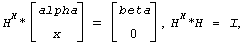
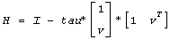

Generates an elementary reflector (Householder matrix) with non-negative beta .
Syntax
call slarfgp( n, alpha, x, incx, tau )
call dlarfgp( n, alpha, x, incx, tau )
call clarfgp( n, alpha, x, incx, tau )
call zlarfgp( n, alpha, x, incx, tau )
Include Files
- mkl.fi
Description
The routine ?larfgp generates a real/complex elementary reflector H of order n, such that
 for real flavors and
for real flavors and
 for complex flavors,
where alpha and beta are scalars (with beta real and non-negative for all flavors), and x is an (n-1)-element real/complex vector. H is represented in the form
 for real flavors and
 for complex flavors,
for complex flavors,
where tau is a real/complex scalar and v is a real/complex (n-1)-element vector. Note that for c/zlarfgp, H is not Hermitian.
If the elements of x are all zero (and, for complex flavors, alpha is real), then tau = 0 and H is taken to be the unit matrix.
Otherwise, 1 ≤ tau ≤ 2 (for real flavors), or
1 ≤ Re(tau) ≤ 2 and abs(tau-1) ≤ 1 (for complex flavors).
Input Parameters
- n
INTEGER. The order of the elementary reflector.
- alpha
REAL for slarfgp
DOUBLE PRECISION for dlarfgp
COMPLEX for clarfgp
DOUBLE COMPLEX for zlarfgp
On entry, the value alpha.
- x
REAL for s
DOUBLE PRECISION for dlarfgp
COMPLEX for clarfgp
DOUBLE COMPLEX for zlarfgp
Array, DIMENSION (1+(n-2)*abs(incx)).
On entry, the vector x.
- incx
INTEGER.
The increment between elements of x. incx > 0.
Output Parameters
- alpha
On exit, it is overwritten with the value beta.
- x
On exit, it is overwritten with the vector v.
- tau
REAL for slarfgp
DOUBLE PRECISION for dlarfgp
COMPLEX for clarfgp
DOUBLE COMPLEX for zlarfgp
The value tau.